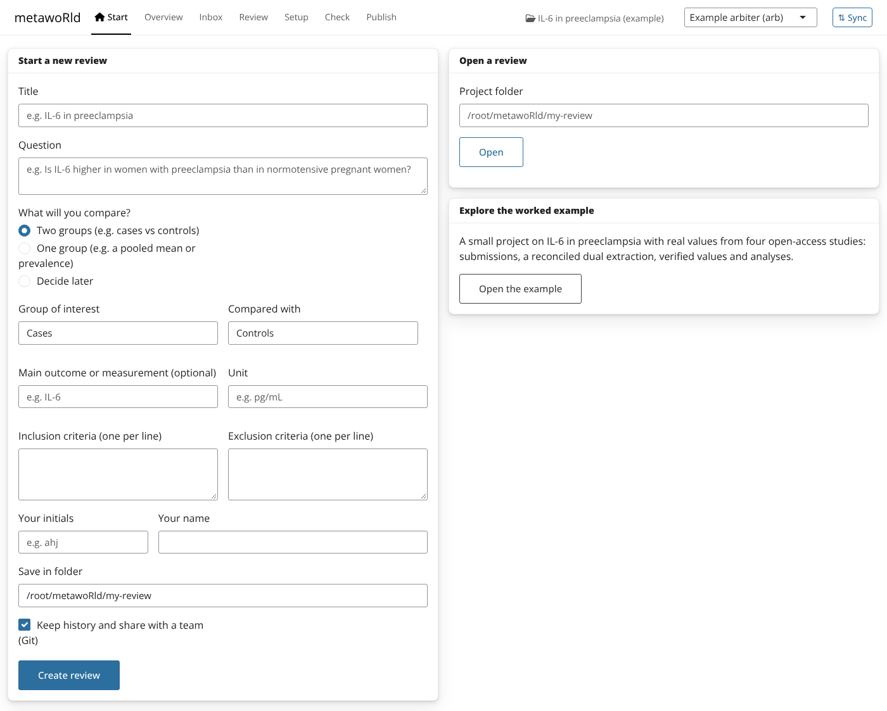
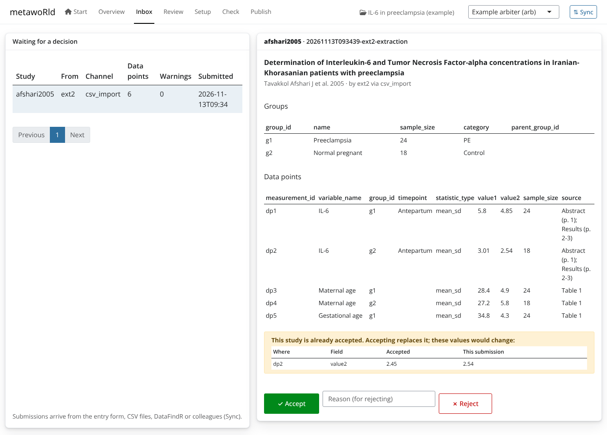
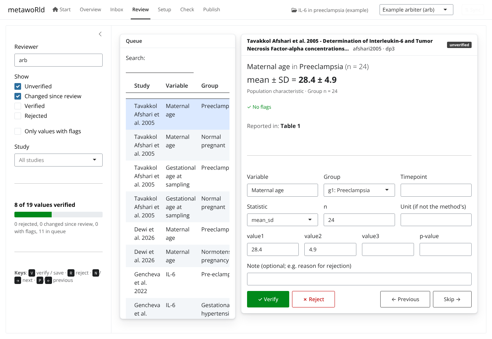
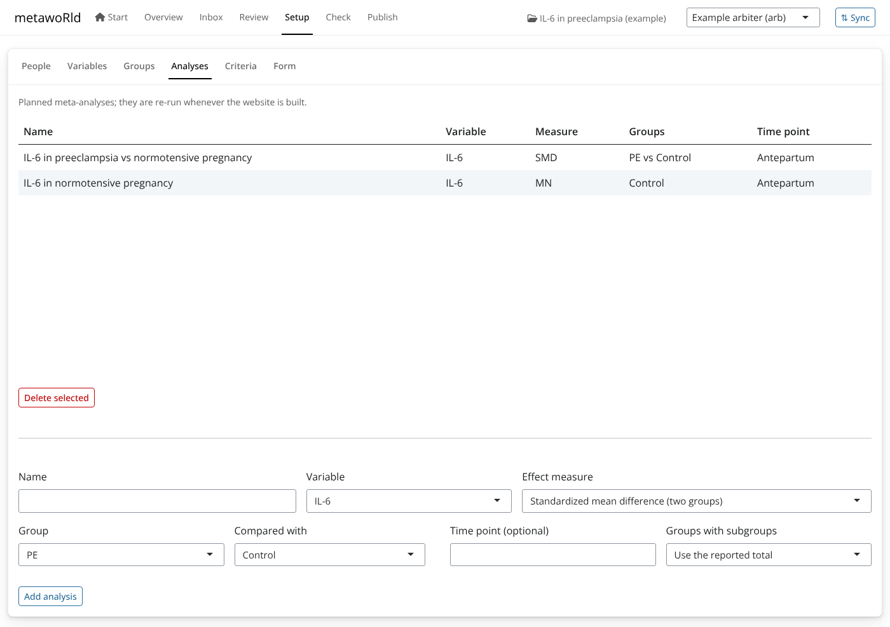

metawoRld::launch()opens the metawoRld app in your browser. It is a front door to the whole review for people who do not want to write R. Everything it does is done with the package’s functions, so the files it writes are the same, and any step can also be done (and reproduced) from R.
Start
Start a review with a short form: the title and question, what you
compare (two groups, one group, or decide later), the main outcome and
its unit, the criteria, and who you are. This calls
new_review(), which sets up the group categories, the
variable and a first meta-analysis, so the first study can be added
right away. You can also open an existing project, or open the worked example to explore.

Overview
Progress at a glance (studies accepted, submissions waiting, values verified, the project check) and a list of next steps, each linking to the screen where it is done.
Inbox
Submissions from every channel arrive here: the entry form, CSV
files, DataFindR, colleagues (through Sync). Each shows its groups, data
points and the checks from _rules.yml. Accept or reject
(with a reason) in one click.
When a submission is for a study that is already accepted, the Inbox
shows exactly what would change (compare_with_accepted()),
so a re-extraction cannot silently replace a correct value:

When two people extracted the same study, Compare and
reconcile lists the disagreements; pick the right value for
each and the app calls reconcile(), recording who agreed
with every accepted value.
Review
The value review app (review_values()) as a tab: each
value in plain language next to the paper, verified with the
keyboard.

Setup
The parts of a project people actually change, without editing YAML:
people and roles, variables (unit and other names), group categories
(including rules over group facts), planned analyses (pick a variable,
two groups and a measure), the criteria, and the form (shown as a
readable list; add a group fact such as onset with
add_group_fact()).

Check and Publish
Check runs check_project() and lists
problems in plain language; Publish builds the living
meta-analysis website with Quarto and opens it.
Working as a team: Sync
Projects can keep their history in Git, and the app hides the Git commands:
- After each action (accept, reject, reconcile, a change in Setup) the app saves a commit with a readable message (“Accept gencheva2022 (…) by arb”), so the history reads like a log of the review.
-
Sync saves your work, fetches the team’s work and
sends yours (
sync_project()). New submissions from colleagues then appear in the Inbox. - Conflicts are rare by design: each extraction has its own folder in
submissions/, only arbiters writedata/, andscreening.csv(which several people append to) is merged line by line. - The app uses the system
gitcommand, so your existing sign-in (a credential manager, GitHub Desktop, SSH keys) works. To share a project, create an empty repository (e.g. on GitHub) and paste its address in the Sync dialog. Without write access, push to a fork and open a pull request.